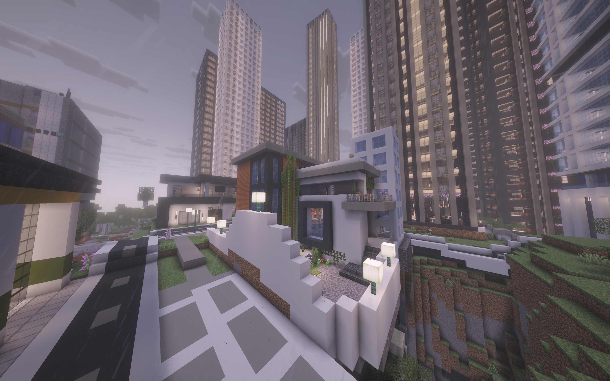
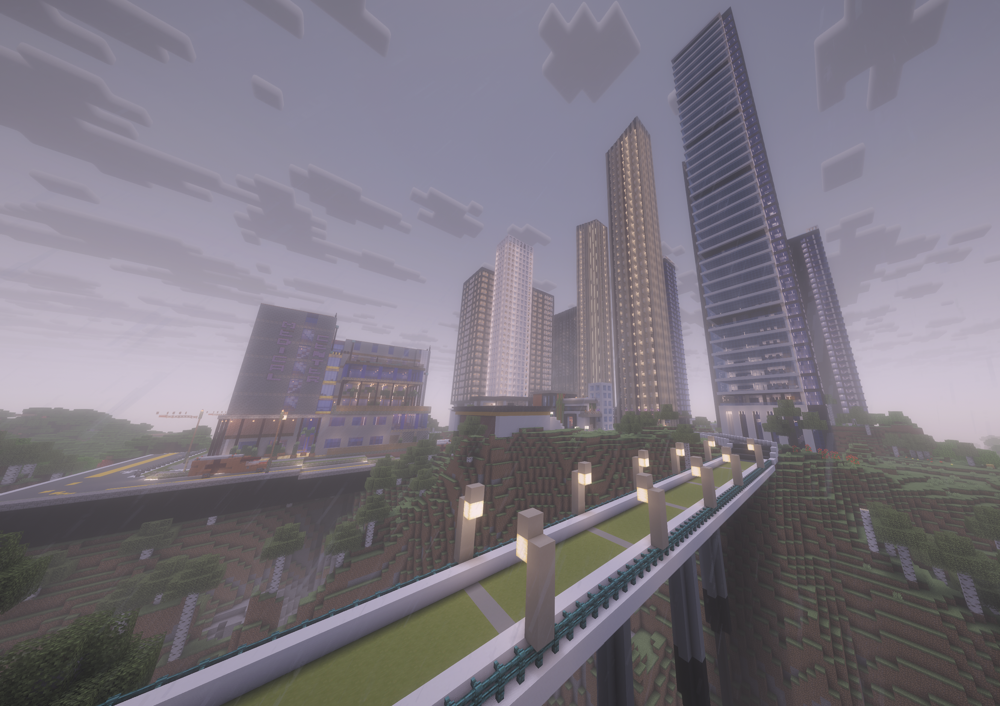

Industries
Experience the diverse sectors that drive Framstad's economy.

Experience the diverse sectors that drive Framstad's economy.
• Tech and start-ups: because of the tech-friendly government policies, the country attracts a large amount of investors in the tech industry. Which helps start-ups to survive, and innovation becomes a culture of Framstad.
• Education-related: due to the great number of tech companies, the education industry is also improved in Framstad by using new technologies, better education structures.
• Large Servers: Due to our advance in technologies and our physical location, the largest servers from the top companies in the world are located in Framstad. Building servers in cold places can reduce the cost for “cooling” to half.
• Food process: Because of the lack of original food, low variety of food, and our high population. Framstad relies on imported food heavily, causing food processing (transportation, processing, selling) works to rise to one of the BIGGEST industries in Framstad.
• Transportation: People living in Framstad often travel to the U.K., Norway and Sweden, plus our large population base. Makes the transportation industry important for Framstad!

• Make the cities more “green” by having more parks and hiking places.
• Through better education: to let people actually understand the “meaning” of their lives and help people find what they want to do.